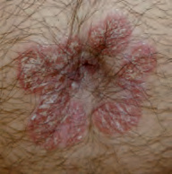
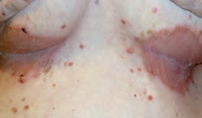
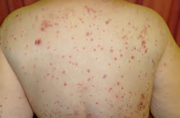
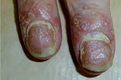
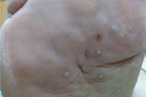
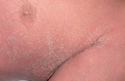
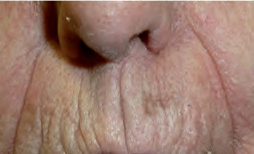
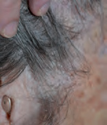
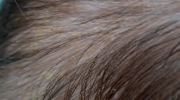

- Placa y distribución: extensora, cuero cabelludo, sacro, ombligo o pliegue.
- Impacto: sueño, trabajo, sexualidad, manos, pies, cara y uñas.
- Articulaciones: dolor inflamatorio, dactilitis o entesitis cambian la derivación.
La placa típica es solo una de las formas
La psoriasis es inflamatoria, crónica y no contagiosa. El diagnóstico suele ser clínico: describe lesión, borde, escama y distribución; después busca uñas, cuero cabelludo, ombligo, región sacra, pliegue interglúteo y síntomas articulares aunque el motivo de consulta sea una sola placa.

Borde neto y escama adherente sobre una placa elevada.
Recopilación Dermatología 2025 · pág. 64.
En el pliegue, la humedad elimina la escama; el borde y la simetría ayudan.
Recopilación Dermatología 2025 · pág. 64.
Brote de pequeñas lesiones, a menudo tras infección estreptocócica, especialmente en jóvenes.
Recopilación Dermatología 2025 · pág. 64.
Pitting y onicolisis; también obliga a preguntar por artritis psoriásica.
Recopilación Dermatología 2025 · pág. 65.
Pústulas localizadas, hiperqueratosis y fisuras: puede limitar mucho la marcha pese a la poca superficie.
Recopilación Dermatología 2025 · pág. 65.
Pústulas estériles difusas sobre eritema; si se acompaña de fiebre o mal estado general es una forma inestable.
Recopilación Dermatología 2025 · pág. 65.| Fenotipo | Claves | Decisión práctica |
|---|---|---|
| Placas | Placa simétrica, bien delimitada y descamativa; codos, rodillas, sacro y cuero cabelludo. | Medir superficie e impacto; tópico si limitada y manejable. |
| Cuero cabelludo | Escama gruesa, placa que puede rebasar la implantación y lesiones en otros sitios. | Separar de dermatitis seborreica, tiña y contacto; elegir un vehículo que llegue a piel. |
| Invertida | Rojo liso y brillante en pliegues, con poca escama. | Descartar Candida/tiña; evitar corticoides potentes y prolongados en piel fina. |
| En gotas | Muchas pápulas pequeñas tras posible faringitis estreptocócica, sobre todo en jóvenes. | Tratar la infección activa si existe, pero no prometer que el antibiótico aclarará el exantema; valorar fototerapia si extensa. |
| Palmo-plantar o ungueal | Fisuras dolorosas, pústulas localizadas, pitting, onicolisis o hiperqueratosis. | Gran impacto funcional con BSA pequeño; confirma hongos si el aspecto ungueal no es concluyente. |
| Eritrodérmica o pustulosa generalizada | Eritema casi universal o pústulas no foliculares extensas con posible fiebre/malestar. | Valoración especializada hospitalaria el mismo día: no es el curso habitual de la psoriasis estable. |
Asimétrica, borde activo y aclaramiento central; confirma con micología si duda, especialmente antes de corticoide.
Más pruriginoso, exudativo o mal delimitado; manos y pliegues pueden solaparse.
Rojo brillante, maceración y pústulas satélite.
En psoriasis en gotas atípica, revisa distribución, palmas/plantas y contexto sexual.
Superficie, sitio e impacto forman una sola gravedad
Registra una línea basal reproducible y repítela al revisar: porcentaje de superficie, valoración global, localizaciones difíciles, uñas e impacto referido. PASI es útil sobre todo en especializada; en consulta, una medición sencilla pero repetida suele ser más informativa que una etiqueta de “leve” o “moderada”.
Palma completa del propio paciente, incluidos los dedos, como estimación rápida.
El tratamiento tópico aislado suele ser poco realista y justifica valorar escalada.
Cara, genitales, manos, pies, cuero cabelludo y uñas pueden causar gran impacto.
Fotografía mínima de situación
- BSA aproximado y valoración del paciente: clara, casi clara, leve, moderada o grave.
- Eritema, grosor y escama en una lesión índice comparable.
- Cara, cuero cabelludo, palmas, plantas, pliegues, genitales y uñas.
- Picor, dolor, sueño, trabajo, actividad, relaciones y adherencia.
- Foto clínica consentida si ayudará a medir evolución; no sustituye la descripción.
Salud más allá de la placa
- Ánimo y sufrimiento psicológico al medir gravedad y al escalar.
- Peso, tensión, tabaco, alcohol y riesgo cardiovascular; en psoriasis grave, evaluación cardiovascular formal.
- Dolor o rigidez articular, dactilitis, entesitis y lumbalgia inflamatoria.
- Fármacos y desencadenantes temporales plausibles, sin atribuir automáticamente cada brote.
- Explica que no es contagiosa y acuerda objetivos concretos: piel casi limpia, función y tolerabilidad.
Elige por zona, grosor y capacidad real de aplicar
Antes de llamar “fracaso” a un tópico, comprueba que el vehículo es aceptable, que llega a la piel, que se ha dispensado cantidad suficiente y que la pauta distingue inducción de mantenimiento. Emoliente y desescamado ayudan, pero el antiinflamatorio debe ser ejecutable.
| Zona | Inducción razonable | Revisión y límites |
|---|---|---|
| Tronco y extremidades | Corticoide potente y análogo de vitamina D en estrategia separada o combinada; la combinación fija una vez al día puede simplificar según ficha técnica. | Revisar en unas 4 semanas. Evitar uso continuo indefinido de corticoide potente; al controlar, acordar tratamiento intermitente o ahorrador. |
| Cuero cabelludo | Corticoide tópico potente una vez al día hasta 4 semanas. Si hay escama adherente, desescamar antes con emoliente/queratolítico y escoger solución, gel, champú o espuma. | Si no responde, revisar técnica y diagnóstico; cambiar vehículo o plantear combinación calcipotriol/betametasona durante un nuevo curso según ficha. |
| Cara, pliegues y genitales | Corticoide suave o moderado una o dos veces al día, máximo 2 semanas. Un inhibidor de calcineurina puede ahorrar corticoide cuando el control continuado sea necesario. | Piel vulnerable a atrofia: no usar corticoide potente; la indicación de calcineurina en psoriasis puede ser fuera de ficha y conviene coordinarla. |
| Palmas y plantas | Emoliente/queratolítico sobre hiperqueratosis y antiinflamatorio potente en pauta limitada; tratar fisuras y reducir fricción. | Suele ser resistente y funcionalmente grave: deriva pronto si no hay respuesta o si hay pústulas persistentes. |
| Uñas | Confirmar que la alteración corresponde a psoriasis y explicar respuesta lenta; tópico dirigido puede servir en enfermedad limitada. | Derivación si dolor, pérdida funcional, varias uñas, sospecha articular o necesidad de sistémico. |
Ungüento para placa gruesa; crema/gel para zonas amplias; solución, gel o espuma para pelo. Pregunta qué podrá usar de verdad.
Evita que una receta antigua se convierta en corticoide potente continuo; revisa atrofia, estrías, telangiectasias y superficie tratada.
La psoriasis suele volver al suspender. Deja por escrito qué reiniciar, durante cuánto tiempo y cuándo consultar.
No es tratamiento habitual de la psoriasis estable. Si se necesita por otra indicación, coordina la pauta y evita retiradas improvisadas.
Indica producto, zona, unidades de punta de dedo o cantidad aproximada, frecuencia, máximo de semanas y pauta posterior. Revisa cuántos envases se han usado: una superficie amplia no se trata de forma creíble con un tubo pequeño durante meses.
Escalar no depende solo del 10 %
Plantea Dermatología cuando el tópico no puede controlar la enfermedad de forma realista: extensión, localización de alto impacto, afectación ungueal importante, deterioro físico/psicosocial o fracaso bien comprobado. La decisión final integra piel, articulaciones, comorbilidad, embarazo posible, preferencias y capacidad de seguimiento.
Opción para psoriasis en placas o en gotas que no se controla con tópicos; requiere asistencia repetida y no se usa rutinariamente como mantenimiento.
Perfiles distintos de rapidez, toxicidad y teratogenicidad; elección y monitorización corresponden al circuito especializado.
La diana no se elige solo por PASI: artritis, infección, EII, riesgo cardiovascular, embarazo y tratamientos previos cambian la opción.
Historia de infección y vacunación, embarazo, cáncer, comorbilidad, interacciones y analítica/cribados según el fármaco concreto.
Una persona con palmas dolorosas, genitales, cara, cuero cabelludo resistente o uñas incapacitantes puede necesitar tratamiento sistémico con un BSA bajo. Documenta la limitación funcional y el impacto: también son gravedad.
Pregunta cada año y deriva en cuanto la sospeches
El PEST puede utilizarse en Atención Primaria, pero no detecta bien enfermedad axial. La sospecha clínica basta para derivar a Reumatología; no esperes erosiones radiográficas.
Dolor y rigidez inflamatoria, a menudo asimétrica.
Inflamación difusa de un dedo completo.
Dolor aquíleo o plantar sin explicación mecánica suficiente.
Inicio joven, rigidez matutina y mejoría con ejercicio; PEST negativo no la excluye.
Preguntas breves que sí cambian conducta
- ¿Alguna articulación se ha hinchado sin traumatismo claro?
- ¿Rigidez matutina prolongada o dolor nocturno que mejora al moverse?
- ¿Un dedo entero se ha hinchado?
- ¿Dolor persistente en talón, fascia plantar u otras inserciones?
- ¿Dolor lumbar de inicio joven y patrón inflamatorio?
Cómo cerrar la consulta
- PEST anual en adultos como apoyo, no como sustituto de historia/exploración.
- Un PEST negativo no descarta enfermedad axial.
- Explora sinovitis, dactilitis y entesis sintomáticas.
- Si la sospecha es razonable, deriva pronto a Reumatología.
- No tranquilices solo porque la psoriasis cutánea sea leve o esté controlada.
Escama en zonas seborreicas: controla, no prometas curar
Cuero cabelludo, cejas, glabela, surcos nasolabiales, pestañas, orejas y región preesternal son las localizaciones clásicas. Puede verse rosada, roja, más clara u oscura que la piel vecina y con escama blanca o amarillenta; la ausencia de “grasa” no la excluye.

Surcos nasolabiales y borde nasal, una distribución muy característica.
Recopilación Dermatología 2025 · pág. 68.
La escama puede ser fina o grasa; delimita si sobrepasa la línea de implantación para pensar en psoriasis.
Recopilación Dermatología 2025 · pág. 68.
Frecuente y autolimitada; reblandecer y retirar con suavidad, sin arrancar.
Recopilación Dermatología 2025 · pág. 68.| Zona | Plan de brote | Mantenimiento o reevaluación |
|---|---|---|
| Cuero cabelludo | Ketoconazol 2 % en champú dos veces por semana durante 2–4 semanas, masajeando la piel y dejándolo actuar 3–5 minutos. Si hay mucha inflamación, corticoide capilar breve según potencia y ficha. | Cuando aclara, champú antifúngico cada 1–2 semanas si recidiva. Si hay escama gruesa, desescamar antes; no rascar ni aplicar solo sobre el pelo. |
| Cara, orejas y pliegues | Ketoconazol en crema una o dos veces al día durante 2–4 semanas. Añadir corticoide suave pocos días si está muy inflamado. | Antifúngico intermitente si recaídas. Un inhibidor de calcineurina puede ahorrar corticoide, aunque la indicación puede ser fuera de ficha. |
| Párpados | Higiene suave del borde palpebral y valorar componente de blefaritis; evita que champú o crema entren en el ojo. | Dolor ocular, fotofobia, pérdida visual o mala respuesta requieren valoración oftalmológica. |
| Lactante | Si asintomática, puede no necesitar tratamiento. Reblandecer con emoliente neutro y retirar la escama suavemente al lavar; no arrancar. | Suele resolverse en meses. Revalorar si extensa, exudativa, muy pruriginosa, con fallo de medro o mal estado. |
Cuando quizá no sea seborreica
- Placa gruesa que rebasa la implantación: psoriasis o “sebopsoriasis”.
- Alopecia, pelos rotos o adenopatía: tiña capitis; solicita micología y no uses solo corticoide.
- Relación con tinte, cosmético o producto capilar: dermatitis de contacto.
- Pliegue macerado con pústulas satélite: candidiasis.
- Dolor, supuración o costras melicéricas: sobreinfección.
Cuándo buscar contexto
- La mayoría de los casos no indica enfermedad sistémica.
- Si es intensa, extensa o refractaria y existe riesgo de VIH, ofrecer prueba; no convertirla en cribado indiscriminado.
- Es más frecuente en inmunosupresión y algunas enfermedades neurológicas, pero la asociación no demuestra causalidad individual.
- Revisa técnica y adherencia antes de pasar a antifúngico oral.
- Si precisa antiinflamatorio repetido en cara, replantea diagnóstico y estrategia ahorradora.
La revisión debe responder tres preguntas
¿Ha mejorado la piel?, ¿ha mejorado la vida diaria? y ¿puede mantenerse el plan sin daño? Documenta superficie o lesión índice, sitio especial, impacto y consumo real de tratamiento; luego decide mantener, corregir técnica, cambiar diagnóstico o escalar.
Diagnóstico claro, tratamiento ejecutable, objetivos compartidos y revisión programada.
>10 %, sitio difícil, uñas incapacitantes, gran impacto, diagnóstico incierto o necesidad de fototerapia/sistémico.
Deriva en cuanto aparezca sinovitis, dactilitis, entesitis o patrón axial plausible.
Pústulas extensas o eritrodermia con fiebre, malestar o alteración sistémica requieren valoración el mismo día.
Referencias utilizadas
- NICE. Psoriasis: assessment and management (CG153). Recomendaciones vigentes consultadas en agosto de 2026.
- American Academy of Dermatology. AAD–NPF psoriasis clinical guideline: tratamiento tópico, fototerapia, sistémicos y comorbilidades.
- EuroGuiDerm. Guideline for the systemic treatment of psoriasis vulgaris.
- British Association of Dermatologists. Seborrhoeic dermatitis, información clínica revisada en 2023.
- NHS. How and when to use ketoconazole, revisada en 2024.
- Actualización Dermatología 2025 - Recopilación, capítulo 10. Fuente secundaria y procedencia de las fotografías.